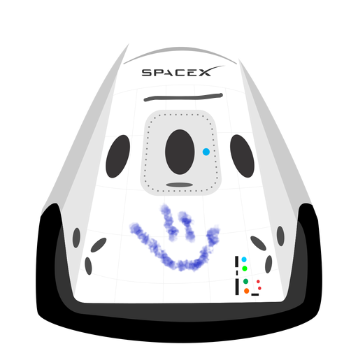

Tu blog de cabecera
Este es el titulo atractivo e interesante del post
y este es el párrafo de inicio donde vamos a explicar las cosas increíbles que se pueden hacer con ramas

Los blogs son la mejor forma de compartir informacion y tus ideas. Mucho más que ir a conferencias o salir en Youtube. Excepto si eres un rockstar, pero estadisticamente no lo eres jaja
Suscribete y dale like